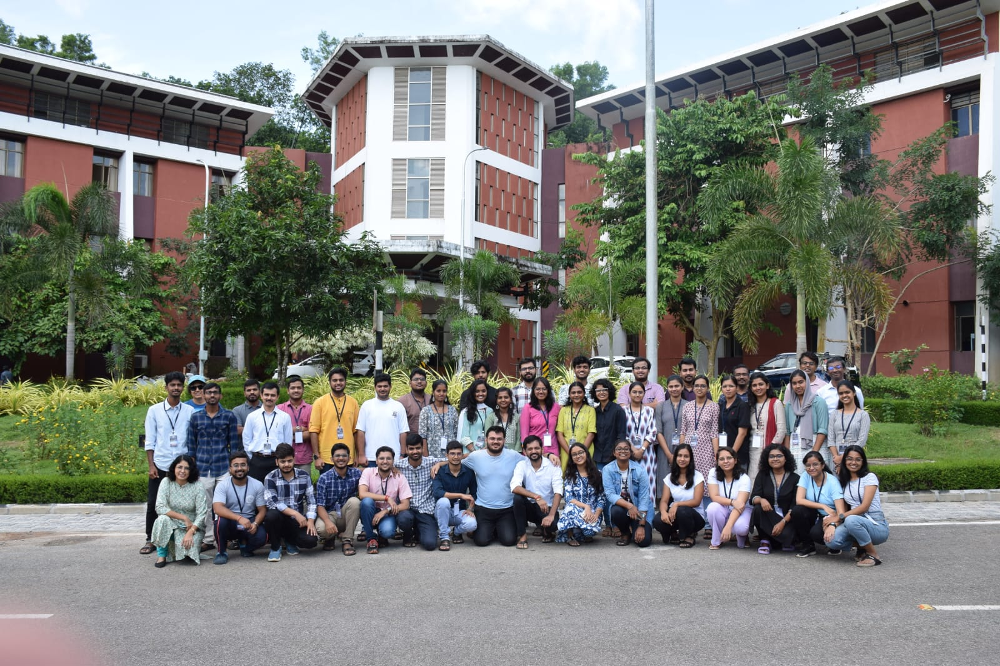

The 12th IIST Astronomy and Astrophysics School was held from July 1–10, 2024. The school aimed to introduce students to the fundamentals of astrophysics, starting from basic concepts and gradually moving toward more advanced topics.
Official Event Page